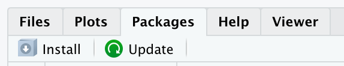

Installing R, RStudio, and packages
Intro
You will do all of your work in this class with the open source (and free!) programming language R. You will use RStudio as the main program to access R.
There are two ways to get up and running with R and RStudio:
Easy, free-to-very-cheap, way: Run RStudio in your browser (preferred)
Hard way: Download and install R and RStudio on your machine ( alternative)
RStudio on the web (option #1)
The easiest way to get started with R is to run RStudio in your browser. This is free and you don’t have to install anything on your computer.
- Go to https://posit.cloud/
- Click on “Sign up” and create an account
- Click on “New Project” and select “New Project from Template”
- Select “Data Analysis in R with the Tidyverse” and click “OK”
Note
I made a video of myself clicking through these screens
You’re done!
RStudio on your computer (option #2)
Install R
First you need to install R itself (the engine).
- If you have a WINDOWS, click here: Download R for Windows and download the most recent version of R
- If you have a MAC, click here: Download for macOS and download the most recent version of R
- Double click on the downloaded file (check your
Downloadsfolder). Click yes through all the prompts to install like any other program.
Install RStudio
Next, you need to install RStudio, the nicer graphical user interface (GUI) for R (the dashboard). Once R and RStudio are both installed, you can ignore R and only use RStudio. RStudio will use R automatically and you won’t ever have to interact with R directly.
- Go here: https://posit.co/download/rstudio-desktop/
- Scroll down, download most recent version for either Mac or Windows
- Double click on the downloaded file (check your
Downloadsfolder). Click yes through all the prompts to install like any other program.
Double click on RStudio to run it (check your applications folder or start menu).
You’re done!
Install packages
Most R packages are easy to install with RStudio. Select the packages panel, click on “Install,” type the name of the package you want to install, and press enter. R will download the package from the web, so make sure you are connected to wifi when you do it.
A less tedious way to do this is via the console or in your script (just make sure to delete afterwards!), by running the following code:
install.packages("name_of_package")Install juanr (and other Github packages)
Some packages, like {juanr} cannot be installed using install.packages() because they are hosted on Github. To install {juanr}, you will first need to install {remotes} and then use install_github(), like so:
install.packages("remotes")
remotes::install_github("hail2thief/juanr")